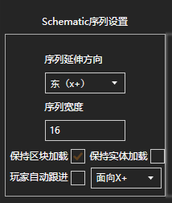
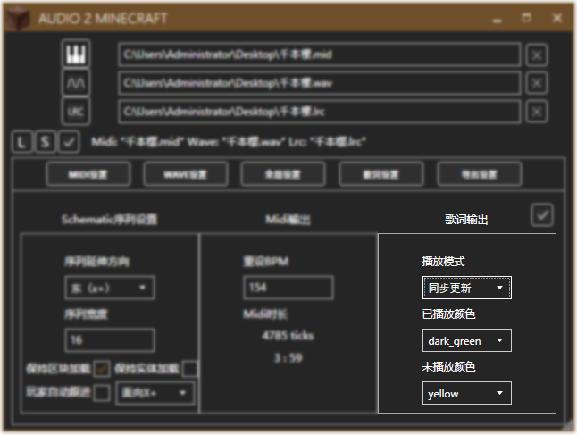
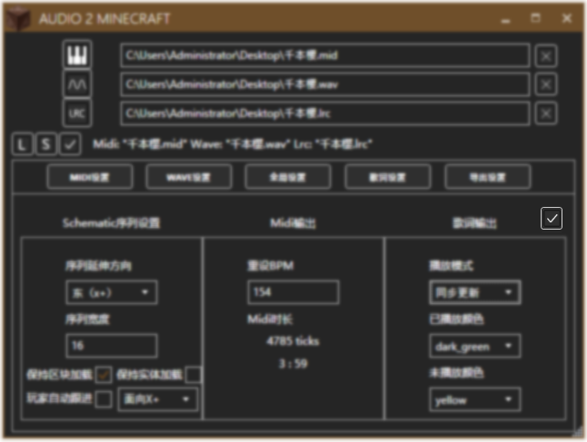

导出设置
Schematic序列设置

你可以设置以下内容：
- 序列延伸方向
包括东南西北四向 - 序列宽度
至少为1 - 保持区块加载
通过同步变换玩家出生点位置以保持区块加载，可能会有卡顿 - 保持实体加载
将计分板中所涉及的实体同步传送至玩家，可能会有卡顿 - 玩家自动跟进
自动跟进播放进度 - 双声道
包括东南西北四向
Mid输出

你可以设置以下内容：
- 重设BPM
重新设定BPM
Midi时长中显示的是该BPM下Midi的长度（包括刻数和绝对时长）
歌词输出

如果导入的歌词文件格式为.lrc，你可以在此处设置以下内容：
- 播放模式
同步更新：同步输出，不断刷新。 单次输出：仅在一个字符由未播放状态变为已播放状态时输出 - 已播放颜色
文字已播放时的颜色 - 未播放颜色
文字未播放时的颜色
保存设置

千万别忘了点击右上方的对勾保存设置。